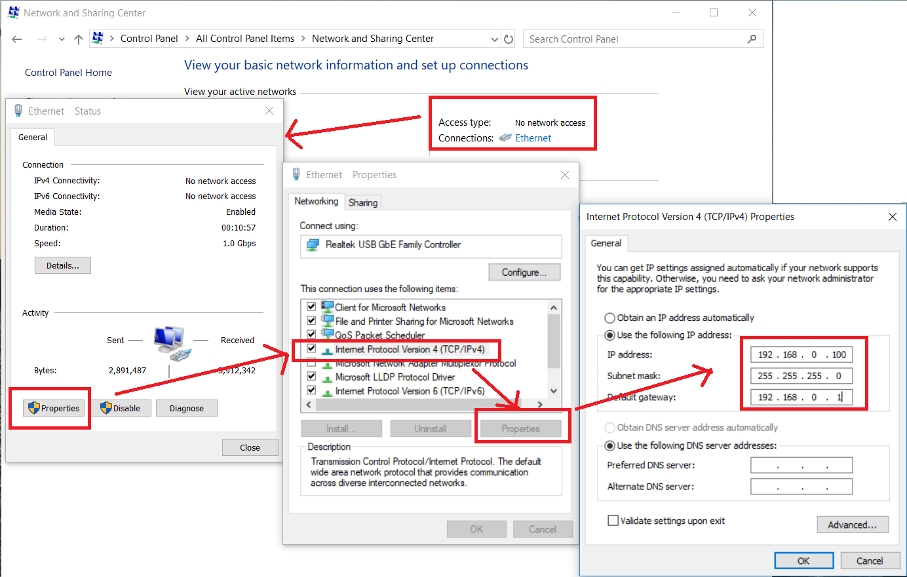
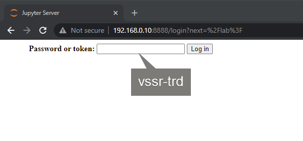
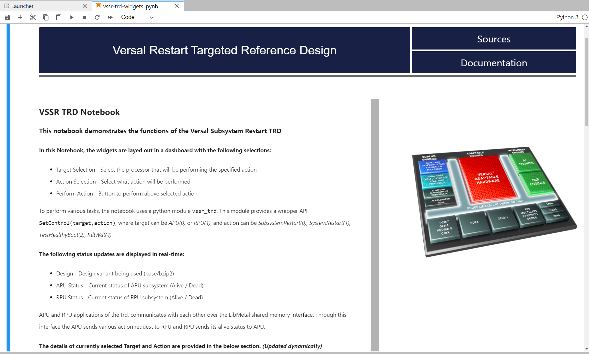

3. Run Images on Target¶
3.1. Prerequisites¶
- SD card image.
- Use the prebuilt petalinux-sdimage.wic.xz from prebuilt directory in the downloaded versal-restart-trd.zip
- Alternatively build the petalinux-sdimage.wic.xz from the build tutorial.
- Image flashing tool, for example:
| OS | Program | Link |
|---|---|---|
| Windows | Balena Etcher | https://www.balena.io/etcher/ |
| Linux |
- Terminal emulator, for example:
| OS | Program | Link |
|---|---|---|
| Windows | teraterm | https://osdn.net/projects/ttssh2 |
| Linux | picocom | https://github.com/npat-efault/picocom/releases |
- Chrome or Firebox browser:
| OS | Program | Link |
|---|---|---|
| Windows / Linux | Chrome | https://www.google.com/chrome/ |
| Windows / Linux | Firefox | https://www.mozilla.org |
3.2. SD Card Creation¶
- Plug uSD card (minimum 8 GB of size) in the host machine.
- Flash petalinux-sdimage.wic.xz (locally built or downloaded prebuilt) in to the uSD card.
- Install and launch Balena Etcher (or any image writing tool) and follow the wizard.
- Browse and select the petalinux-sdimage.wic.xz image as file to be flashed. (Balena Etcher will uncompress the .xz file automatically. Uncompress manually, if other tool is used)
- Select target as uSD card
- Click flash to write the image.
- Install and launch Balena Etcher (or any image writing tool) and follow the wizard.
{kind=link}
3.3. Board Setup¶
The following figure shows how to set up the VCK190 or VMK180 evaluation boards.

Board jumper and switch settings
This is a onetime setup and the board should have been delivered to you with this default settings, but it is good to double check for the first time when you get the board.
- Make sure you remove J326 (7-8) jumper.
- Setup SYSCTRL Boot mode switch SW11 to (ON,OFF,OFF,OFF) from switch bits 1 to 4 as shown in the above picture.
- The Evaluation kit comes with an image pre-installed on the System Controller micro SD card. If for some reason the System Controller uSD card is corrupted or damaged, you can create new by flashing the prebuilt System Controller SD Image.
- Setup Versal Boot Mode switch SW1 to (ON,OFF,OFF,OFF) from switch bits 1 to 4 as shown in the above picture.
Serial console settings
The Evaluation Boards come with a USB-C connector for JTAG+UART, and when connected three UART ports should be visible in Device Manager. They will not be identified by name, but they will correspond to the following:
- Versal UART0
- Versal UART1
- System Controller UART
Connect a USB-C cable to the USB-UART connector. Since the COM ports are not identified by name, open three terminal emulators, and choose one COM port for each one using the following settings:
- Baud Rate: 115200
- Data: 8 bit
- Parity: None
- Stop: 1 bit
- Flow Control: None
UART0 will be used for PLM, U-boot, and Linux on APU. UART1 will be used for RPU prints. System Controller UART will not be used, and can be closed once its terminal has been identified.
Ethernet IP settings
The JupyterLab Server IP address is fixed (static) at 192.168.0.10.
In order for this server to be seen by another computer, such as a laptop, the computer needs to be on the same subnet.
On Linux, type:
ifconfig
Note the Ethernet adapter name given, then type:
ifconfig <adapter> 192.168.0.xxx
where .xxx can be anything other than .10 which would conflict with the JupyterLab server.
{kind=link}
On Windows, set the IP address from Control Panel as shown below.
{kind=link}
3.4. Connect to the JupyterLab Server¶
Follow these steps to boot the board into Linux.
Ensure all steps under the section ‘Board jumper and switch settings’ are verified.
Insert the prepared micro SD card into the Versal SD card slot (refer to Board Setup)
Make physical connections to ethernet, UART, and power as shown in the image.
Have the UART0 & UART1 terminal emulator connected.
Turn ON power switch SW13.
On Versal UART0 terminal, Versal device boot messages should appear starting with the message “Xilinx Versal Platform Loader and Manager”
In about 60 seconds boot is complete. Observe the Linux prompt root@plnx-<board>-<sil> and autostart of JupyterLab server as shown in the example below:
root@plnx-vmk180-es1:~# [I 2038-02-17 10:13:21.707 ServerApp] jupyterlab | extension was successfully linked. [I 2038-02-17 10:13:21.879 LabApp] JupyterLab extension loaded from /usr/lib/python3.8/site-packages/jupyterlab [I 2038-02-17 10:13:21.879 LabApp] JupyterLab application directory is /usr/share/jupyter/lab [I 2038-02-17 10:13:21.896 ServerApp] jupyterlab | extension was successfully loaded. [I 2038-02-17 10:13:21.896 ServerApp] Serving notebooks from local directory: /usr/share/notebooks/vssr-trd [I 2038-02-17 10:13:21.897 ServerApp] Jupyter Server 1.2.1 is running at: [I 2038-02-17 10:13:21.897 ServerApp] http://192.168.0.10:8888/lab [I 2038-02-17 10:13:21.897 ServerApp] or http://127.0.0.1:8888/lab [I 2038-02-17 10:13:21.897 ServerApp] Use Control-C to stop this server and shut down all kernels (twice to skip confirmation).
Follow these steps to connect to the jupyter-server using Chrome browser on the laptop.
Note: This demo is tested with Chrome browser, but Firefox should work as well.
Type the IP address of the Jupyter server in the browser address bar of the laptop:
http://192.168.0.10:8888
Enter the password
vssr-trdClick Log in button
Note: To stop and restart the Jupyter server, use the following commands:
/etc/init.d/jupyterlab-server stop /etc/init.d/jupyterlab-server start
To look up the jupyter server IP address on the target, run:
jupyter lab list
{kind=link}
3.5. Run the TRD Notebook¶
This TRD includes a Jupyter notebook to demonstrate various restart options.
3.5.1. Start the Notebook¶
On the left pane (File browser pane) of the browser, double-click vssr-trd-widgets.ipynb to open the notebook.
Select menu Run > Run All Cells. This will start the TRD dashboard.
{kind=link}
{kind=link}
This will start the TRD dashboard in the notebook.
3.5.2. Using the Notebook¶
The notebook is laid out in a dashboard which allows to choose various TRD operations.

The top half of the notebook presents the general information about the notebook with links to documentation and sources.

{kind=link}
The bottom half of the notebook has 2 panes
- Control & Status pane on the right: Which allows to perform various TRD actions and shows the live status of subsystem.
- Description pane on the left: Shows detailed description of current selection in the control pane.
This is updated dynamically when the selection in Control pane changes. The following information is displayed:
- Introduction and how the agent will normally perform this operation.
- Behind the scene operation done by plm and other intermediate layers.
- How this operation can be triggered using the python module
- Observation and what to expect.
{kind=link}
3.5.3. Control Selections¶
Following TRD operations can be selected using the control pane.
| Target | Action | Description |
|---|---|---|
| APU | Subsystem Restart | APU performs self (subsystem only) restart |
| Watchdog Recovery | APU kills fpd watchdog to demonstrate recovery | |
| System Restart | APU performs full system restart | |
| Healthy Boot Test | APU demonstrate healthy boot based recovery | |
| RPU | Subsystem Restart | RPU performs self (subsystem only) restart |
| Watchdog Recovery | RPU kills lpd watchdog to demonstrate recovery | |
| System Restart | RPU performs full system restart | |
| Healthy Boot Test | RPU demonstrate healthy boot based recovery |
After the selection Perform Action button triggers the selected action.
Refer to Restart Use Cases section in the Appendix for more details on each of the use cases.
3.6. Troubleshooting¶
- If after restarting the APU subsystem, the Jupyter notebook does not reconnect, try hitting F5 key to refresh.
- If the petalinux image is configured to have dynamic (static in tutorial), then enter the new ip address (if the board ip is reassigned) after each reboot in the browser.
- If after restarting the APU subsystem, you are prompted for the key again, make sure that cookies are enabled in your browser.